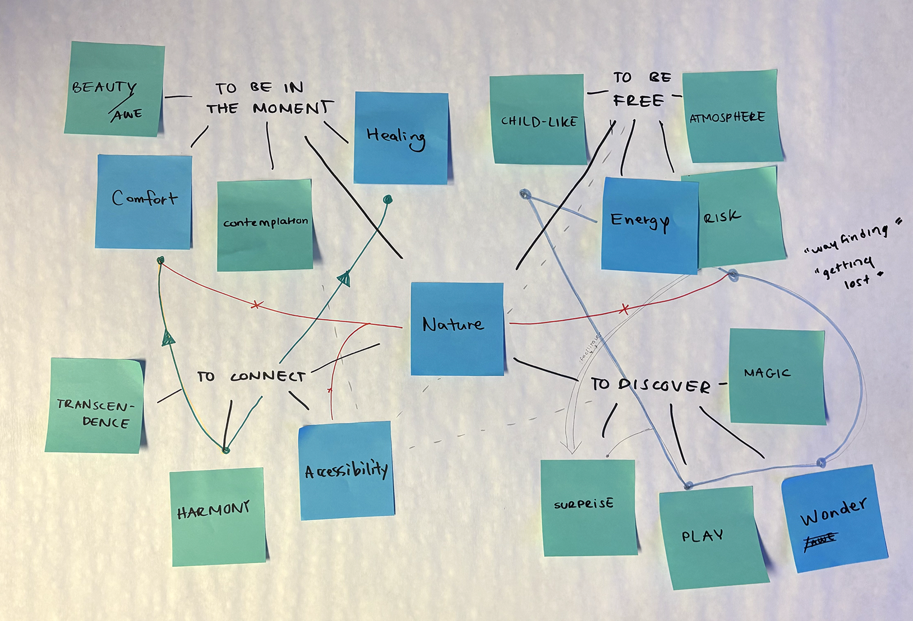
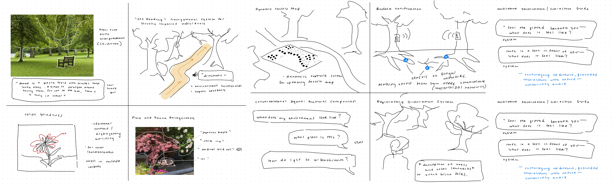
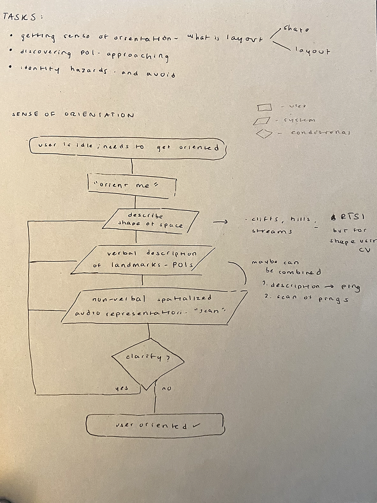
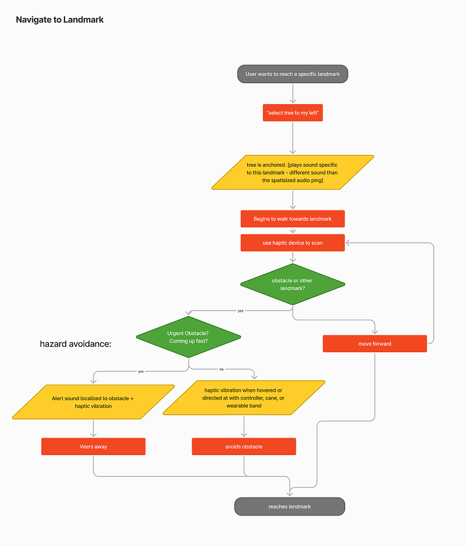
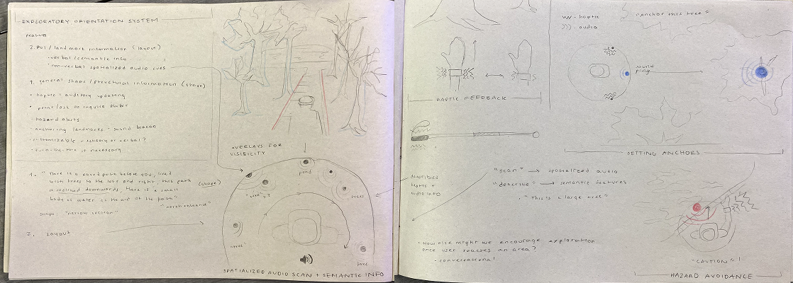
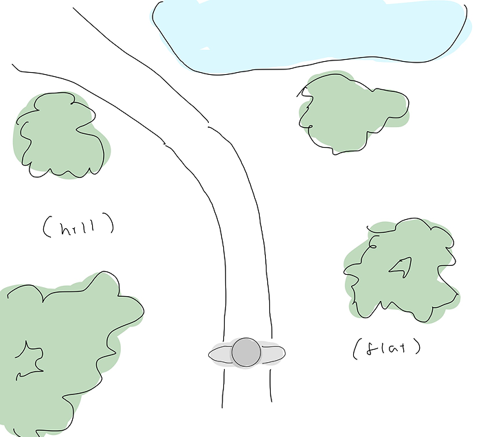
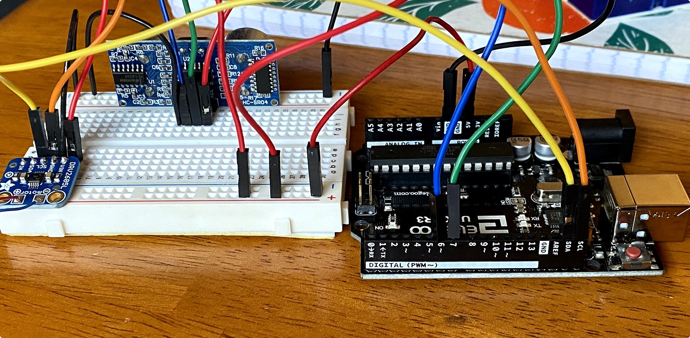
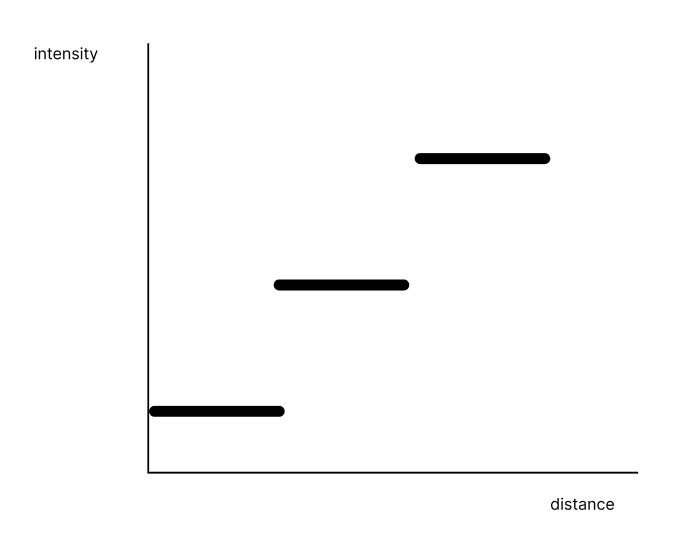
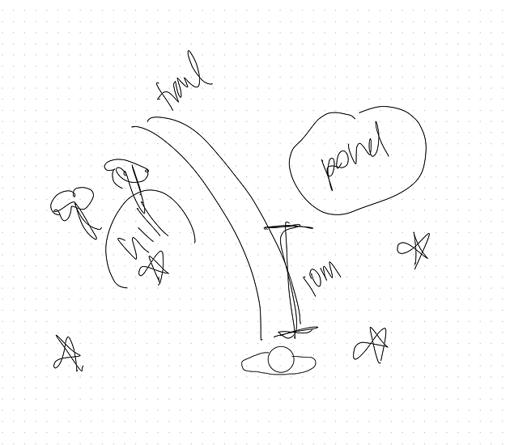
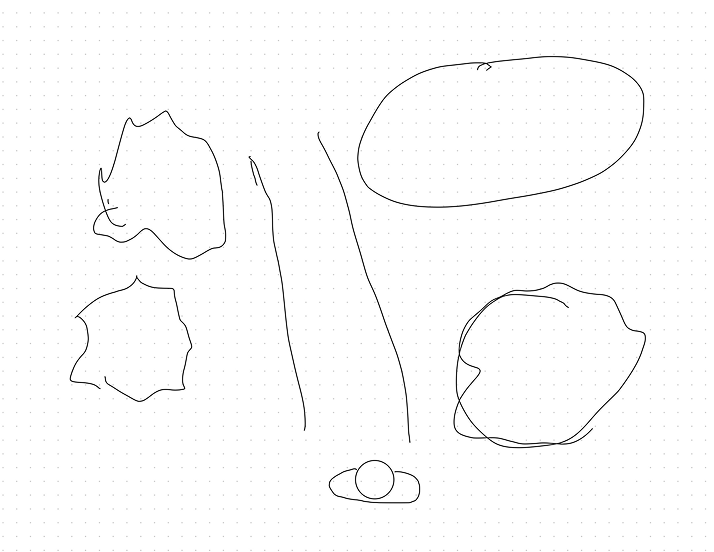

An XR Assistive Orientation System: Motivating Exploration in Schenley Park for Visually-Impaired People
Role
Experience + Interaction Designer
Physical + Digital Prototyping
User Research + Testing
Concept Development
Collaborators
Katie Makarska Shirley Du
Timeline
7 weeks
OrientEcho is an exploratory design project aimed at increasing accessibility
for visually-impaired individuals in Pittsburgh's Schenley Park. It is an XR
navigational assistive system for visually impaired individuals, designed to
augment spatial awareness and empower exploration. Unlike traditional tools that
impose strict wayfinding, OrientEcho prioritizes the freedom of discovery in
navigating and experiencing Schenley Park. By leveraging spatial computing, it
translates space into sound and understanding in real-time, enabling users to
rediscover the world on their terms. The system incorporates a voice user
interface for seamless interaction to enhance usability and freedom during
navigation. OrientEcho relies on two pieces of hardware: AR glasses and a haptic wearable bracelet.
Environmental snapshot
Provides users with an immediate, comprehensive overview of their
surroundings through verbal descriptions and a spatialized audio scan.
Proximity-mapped haptic feedback
Conveys spatial information via haptic vibration to keep the user oriented.
Sound beacons
Localized pings at user set locations help users orient themselves toward
specific destinations using pings that become more frequent.
Hazard alerts
Notifies users about potential obstacles and hazards.
Features
"Hey Echo, what's around me?"
Environmental Snapshot
To orient the user, the environmental snapshot includes:
Spatial Structure Description: A spoken description of the environment,
including shape of the terrain, spatial relationships, landmarks, obstacles, and
pathways. This gives users a high-level mental image of their surroundings.
Audio Scan: Spatialized sound cues that simulate the positions and
characteristics of objects or hazards in the environment, offering an intuitive
sense of depth and direction.
Example environment in Schenley Park.
Spatial Structure Description
“A dirt and gravel path goes straight ahead. On the left, the path drops off
sharply and the ground slopes down to a lake with trees around it. On the right,
the terrain rises steeply along the path, with a set of stairs carved into the
incline. They lead upward to a bridge on higher ground that passes over the
path.”
Spatialized Audio Scan
The audio scan is a left-to-right sweep of spatialized pings, with the volume
corresponding to the proximity of objects to simulate their locations—like a
sound emanating directly from each object. This feature uses spatialized sound
to convey the positions and characteristics of objects and obstacles in the
user's surroundings.
By mapping environmental elements to distinct audio cues, the system allows
users to "hear" the layout of their environment in a way that mirrors real-world
spatial relationships. The sounds' intensity and direction provide intuitive
cues about distance and orientation, helping users build an efficient and
accurate mental map of their surroundings.
Proximity-Mapped Haptic Feedback
The haptic wearable increases the intensity of vibrations as the user approaches
an obstacle. A light vibration indicates a distant object, while a stronger,
continuous vibration signals a nearby object. This feedback is designed to
provide continuity, helping the user maintain the mental map of their
surroundings. It acts as a tool for both exploration and orientation,
reinforcing the environmental layout and allowing users to stay aware of spatial
relationships as they navigate.
Sound Beacon
The Sound Beacon feature helps users navigate toward specific destinations
using localized audio cues. Users can set an anchor at a point of interest, like
a pond or tree, and the system emits a recurring sound (e.g., a “ding”) from the
direction of the anchor. The frequency or intensity of the sound increases as
users get closer, offering intuitive guidance. The surrounding obstacles
continue to trigger haptic feedback, to keep the user oriented.
Hazard Alerts
The Hazard Alerts feature notifies users about potential obstacles to ensure a
safe navigation experience. Hazards are classified as Low, Medium, or High based
on their severity and are communicated through verbal descriptions, audio cues,
and haptic feedback. The system addresses hazards in three key scenarios:
Static Obstacles (Proactive and Anchor-Related): The system
continuously monitors for static obstacles, such as tree branches or uneven
terrain, and notifies the user immediately upon detection. Additionally, when an
anchor is set, the system highlights all static hazards between the user and
their destination.
Example: “There's a bench on the path 3 meters ahead. Move slightly to the
left to avoid it.”
Dynamic Obstacles While Moving: The system detects real-time, moving
obstacles, like people, dogs, or squirrels, and alerts the user as they
navigate toward the anchor.
Example: “A cyclist is approaching from the right, 5 meters away. Please
stop and wait.”
On-Demand Hazard Check : Users can ask, “Are there any obstacles nearby?” and
receive detailed updates about potential hazards in their immediate
surroundings.
Research and Concept Development
To begin our project, we wanted to understand the aesthetic values present in
parks for any visitors. To do so, we concept mapped the qualities we found
relevant to parks.

We pinpointed discovery and freedom as tenets to the park experience that we
were interested in exploring. Through this, we began to toy with the idea of
wayfinding and exploration as critical to the aesthetic experience in a park.
To better understand the problem space, we conducted a literature review on
current research surrounding the experiences of visually-impaired people’s (VIP)
experiences in nature as well as existing navigational tools. Coupled with found
testimonials, we derived the following insights:
Nature can provide a sense of freedom and independence, counter isolation, and
evoke awe and wonder.
VIPs value discovery and individual accomplishment in natural settings, some also value a feeling of risk.
Existing navigational tools are strict, limiting the autonomy of individuals with visual impairments and discouraging exploration and discovery.
Existing navigational tools do not adapt to un-mapped areas without pathways, leaving VIPs to navigate on their own.
The aesthetic analysis and literature review led us to the following question:
How might we enable those with visual impairments to explore and experience the
beauty of nature on their own terms?
Our team then brainstormed a wide array of concepts. Here are some of mine:

After evaluating the advantages, disadvantages, and necessary design
considerations for each of our concepts, we chose the “exploratory orientation
system” for its non-prescriptiveness, focusing on solely empowering discovery
and appreciation of beauty, not defining it. This concept leverages spatial
computing to provide landmark information to users, offering affordances like
haptic and spatialized audio feedback that could be integrated into our design.
Our previous literature review validated this concept: VIPs want to explore
nature but not necessarily be guided. To do so, they need a sense of scale,
dimension, and the landmarks around them--essentially, a map.
Concept Elaboration
This prompted the question: How can we provide or aid in the a VIP's development of a cognitive map?
SHAPE Represents the environment as a simplified "skeletal wireframe," outlining its boundaries and overall structure.
LAYOUT Describes the arrangement and positioning of objects within the environment.
Design Decision
SHAPE Verbal descriptions of the surrounding environment and landmarks.
LAYOUT Spatialized audio scan that highlights the locations of the surrounding landmarks.
However, the verbal feedback and spatialized audio only provide a static map of
the user's environment. Once given a spatial “image,” we asked how we might keep
updating the user with this spatial information as they are navigating:
We found that haptic feedback was a ripe feature to leverage for that real-time
updating. Thus, we developed the idea of proximity reactive haptic feedback,
like an extension of a cane.
User Flows
To start understanding what the higher-level picture of this system would be,
we created simple user flows to understand user-system interactions in key
moments


Initial Sketches

Prototyping, Testing, and Iteration
Prototypes
Primitive Environmental Snapshot
To start making our concept tangible, we created a prototype of the “orientation
function” in which the user receives a verbal description of the environments
spatial structure and an audio scan of an artificial test environment.
Transcription
“To your left, there's a small hill with trees on it. Straight ahead, a path
runs forward and curves to the left. About 10 meters away, just past the trail,
there's a pond slightly to your right. Beyond the pond, the ground flattens out
with more trees.”
*Series of “spatialized” pings that pan left to right and vary in volume
corresponding to the distance of the object*

Artificial test layout.

Haptic Prototype 1
Haptic Bracelet
The first prototype for the haptic wearable featured three levels of intensity
for haptic vibration that were mapped to distance. The bracelet would pulse at
regular intervals, changing intensity dynamically.
The first iteration included an ultrasonic ranger distance sensor, which was low
in acuity.

Prototypes
Testing an accessibility tool in an academic setting came with logistical
challenges. Recruiting visually impaired participants (VIPs) within a short
timeframe proved difficult, raising concerns about extractive testing. Instead,
we took a perhaps more unorthodox approach: testing sighted users. We had them
listen to our audio prototypes and stretch their perceived spatial layouts. This
helped refine how audio conveyed environmental structure. Additionally, we
tested our haptic prototype with sighted users to assess how intuitively
distance mapped to vibration intensity.
Reference layout.

User sketch 1.

User sketch 2.
This approach was quite limited. VIPs process sensory information differently,
depending on their experience with visual impairment. For example, screen reader
users process information at a speed much faster than a sighted user could
comprehend. Preferences also vary—some users favor verbal and semantic
descriptions, while others rely more on sensory cues. While sighted user testing
informed early iterations, future work must involve VIP participants to ensure
the system truly aligns with their needs.
Iteration & Key Improvements
Refining Audio & Verbal Feedback
Challenge: Users needed more actionable terrain
details and struggled with interpreting audio pings.
Solution: Added terrain and obstacle descriptions,
onboarded users with clear verbal instructions, and combined distance feedback
with sound cues.
Enhancing Haptic Guidance
Challenge: Users detected objects but couldn't judge
distances well; low obstacles were hard to perceive.
Solution: Upgraded to a Micro-LIDAR sensor, replaced
stepped vibrations with smooth feedback, and added critical proximity alerts.
Improving Navigation with Sound Beacons
Challenge: Users wanted confirmation upon arrival and
found volume changes ineffective for distance perception.
Solution: Introduced a distinct destination sound and
used frequency shifts for proximity cues.
Optimizing Hazard Alerts
Challenge: Users preferred directional guidance over
simple warnings and needed alerts to match risk levels.
Solution: Implemented automated hazard detection,
added directional instructions (e.g., “Step left”), and adjusted alert intensity
based on severity.
The final designs are displayed at the top of this page. The final haptic
bracelet prototype and design featured linear feedback, where vibration
intensity increased with proximity, and pulsing was introduced for close-range
alerts. The final prototype included a wearable bracelet strap with a battery
for full usability.